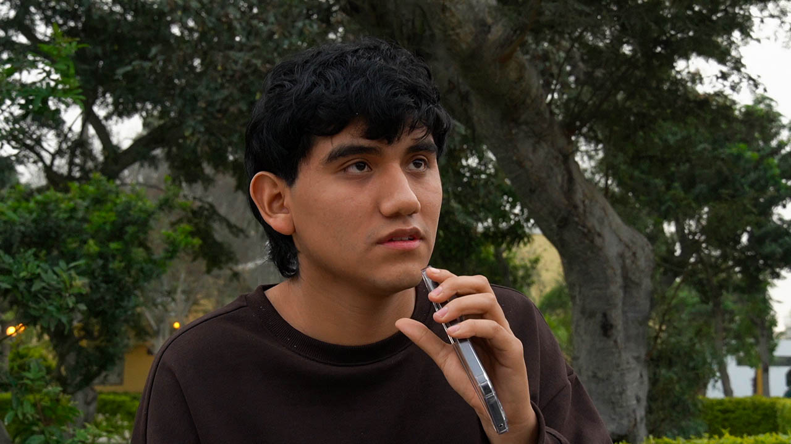

RAÍCES URBANAS



×
Santiago Danilo Alvarado - Nilo
Artista urbano y graffitero autodidacta, participante del festival Lima 28. Conoció el graffiti en el colegio y desde entonces lo usa como vía de expresión personal y colectiva.
Daniel Olortegui - AKM
Pintor abstracto y graffitero independiente, trabajador municipal en Carabayllo. Explora el arte urbano como extensión de su práctica artística, inspirando a su entorno cercano
×
Edward Briceño - Cacofónico
Periodista y productor audiovisual de la UNMSM, rap
×
Andrés Vilca Cabanillas Artezano (apodo)
Organizador de batallas de freestyle en el comedor de San Marcos y estudiante de educación base 21
×
Antoni Alejos Milla
Estudiante de la carrera administración en la UNMSM y rapero conocido como Antop